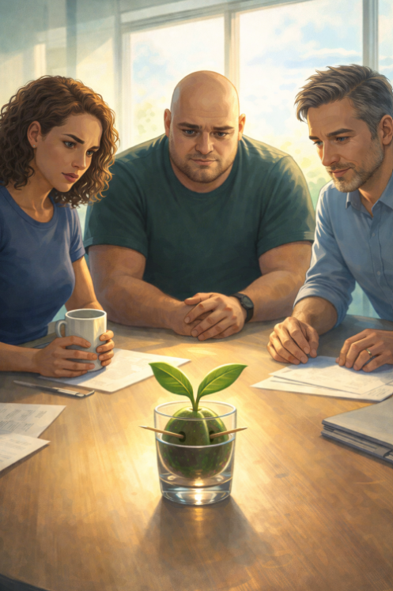

Giovedì 10 marzo 2026
Oggi il sole è entrato dall'ufficio di Simone come se avesse prenotato.
Non quella luce grigia e indecisa dei giorni normali. Luce vera. Calda. Il tipo di luce che fa sembrare tutto leggermente migliore di quello che è, che arrotonda i bordi delle cose e rende persino le scrivanie più simpatiche.
Le mie foglioline l'hanno sentita subito. Si sono inclinate verso la finestra con quella discrezione tipica del regno vegetale, che non chiede il permesso ma si prende quello che gli serve. Ero lì, nel mio bicchiere, in posizione panoramica privilegiata, quando sono arrivati.
Prima Giulia. La Guacollega. Quella che mi ha cercato nel magazzino, quella che ha scritto la lettera, quella che — devo ammetterlo — mi ha salvato da una spirale notturna che stava diventando preoccupante.
È entrata con quella sua energia che non è rumore ma presenza. Ha posato una tazza di caffè sul tavolo e si è guardata intorno come fa sempre chi si aspetta che da un momento all'altro succeda qualcosa di interessante.
Ha guardato me.
— Stai bene?
Ho mosso una fogliolina.
Linguaggio vegetale per: abbastanza bene, grazie, siediti che c'è da parlare.
Poi è arrivato SimoneQ. Il custode di QuaSim. È entrato con quell'aria di chi porta un pensiero scomodo in una giornata bella e non sa ancora se è il caso di tirarlo fuori. Si è seduto. Ha posato le mani sul tavolo. Le ha tolte. Le ha rimesse.
Nervoso.
E infine Simone. Il mio Simone.
Il mio alleato principale, il garante della mia posizione panoramica, l'uomo che mi ha dato un bicchiere con vista e non ha mai cercato di infilarmi niente nei fianchi.
È entrato per ultimo, ha chiuso la porta con una precisione che significava: questa conversazione non esce da qui, e si è seduto.
Per un momento nessuno ha parlato.
Il sole continuava a fare il suo lavoro, ignaro e ottimista.
Fu Giulia a rompere il silenzio.
— Allora. QuaSim.
SimoneQ si è mosso sulla sedia.
— QuaSim — ha confermato Simone.
Io stavo ad ascoltare.
Immobile. Professionale.
Due foglioline perfettamente orientate verso il centro della stanza.
Come antenne di precisione.
— C'è qualcosa che non torna — ha detto Giulia.
Da quando è arrivato, le cose si spostano. Non nel modo di Albucaos.
Qualcosa di più sottile. Decisioni che cambiano. Priorità che si invertono. Persone che iniziano a ragionare in modo… diverso.
SimoneQ ha abbassato lo sguardo.
— Lo so.
— Lo sapevi già?
— Non sapevo cosa sapevo.
Ci fu una pausa di riflessione.
— All'inizio pensavo fossi io.
Ho sentito le foglioline vibrare leggermente.
Anche io.
Anche io pensavo fossi io.
Giulia ha avvolto le mani attorno alla tazza di caffè.
— La cicatrice.
— La modifica strutturale — ho corretto mentalmente.
— Elisa l'ha aperto con un coltello — ha detto Giulia.
Ma la domanda non è come.
La domanda è perché lo ha fatto prima del tempo.
Cosa voleva vedere.
Silenzio.
Simone ha tamburellato un dito sul tavolo.
— Elisa non fa nulla per caso.
— No.
— E non fa nulla senza un obiettivo.
Ho riflettuto su questo mentre il sole si spostava di qualche centimetro sulla parete.
Elisa.
La mia ex padroncina. Quella degli stuzzicadenti nei fianchi. Quella del sorriso da botanica entusiasta.
Ma e se non fosse leggerezza? E se fosse esattamente il contrario?
— Bisogna capire cosa sa QuaSim — ha detto Simone.
— E soprattutto cosa riferisce. E a chi.
— Non riferisce — ha detto Giulia.
— Accumula.
C'è differenza.
SimoneQ ha annuito lentamente.
— Quindi cosa facciamo?
Giulia ha alzato lo sguardo verso di me.
Proprio verso di me.
Ho raddrizzato le foglioline con tutta la dignità che un seme in un bicchiere può esprimere.
— Guacamino lo ha già incontrato.
— Secondo me ha già capito più di quanto creda.
Tre paia di occhi si sono posati su di me.
Ho trattenuto il respiro.
O almeno, ho fatto quello che i semi fanno quando trattengono il respiro.
E in quel momento ho capito una cosa.
Non ero solo un seme in un bicchiere.
Ero un testimone.
E i testimoni, in certe storie, diventano molto più importanti di quanto chiunque avesse previsto.
Specialmente di quanto avesse previsto QuaSim.
— Guacamino 🥑
← Torna al Giorno 28 Vai al Giorno 31 →